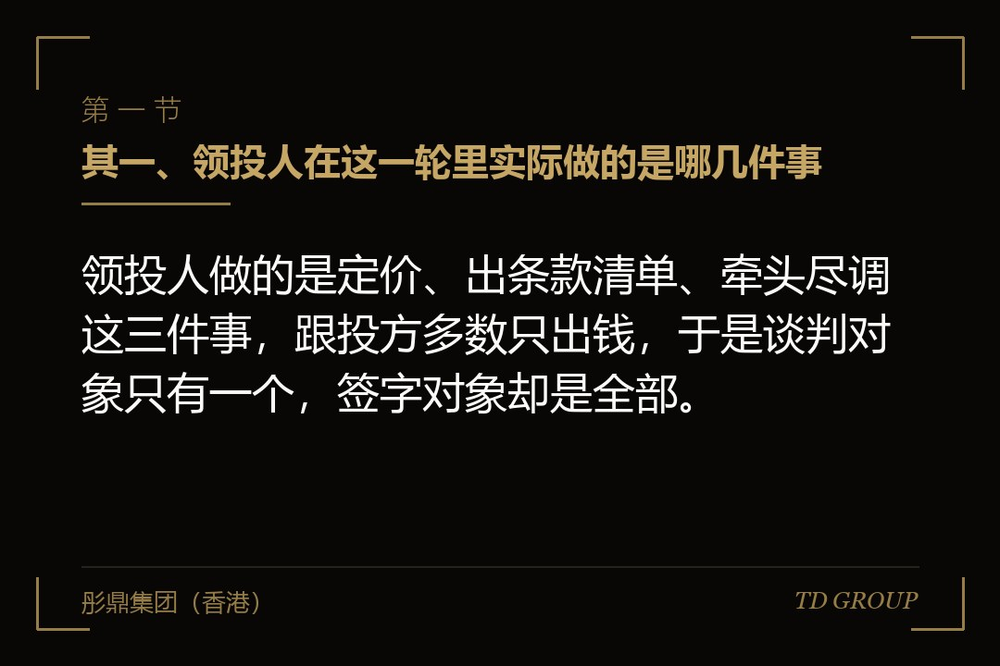
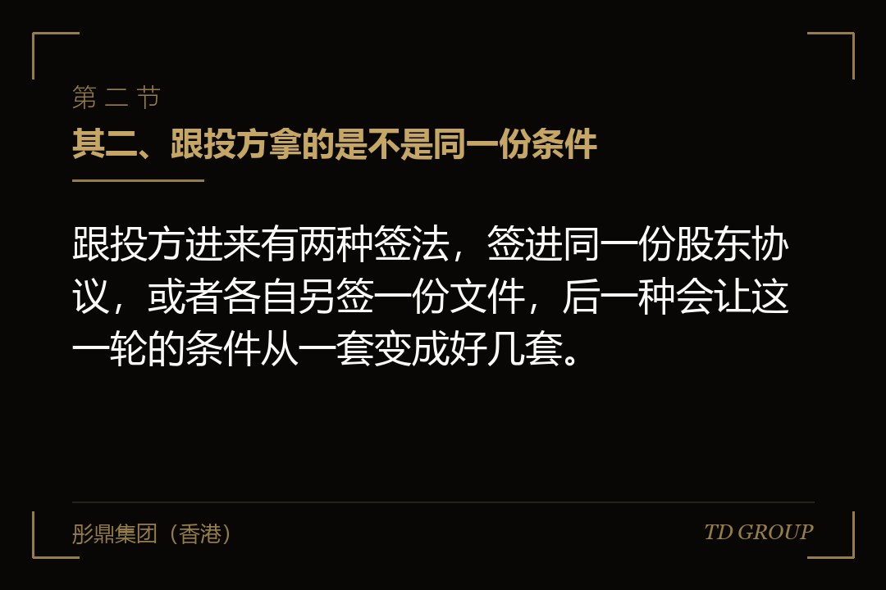
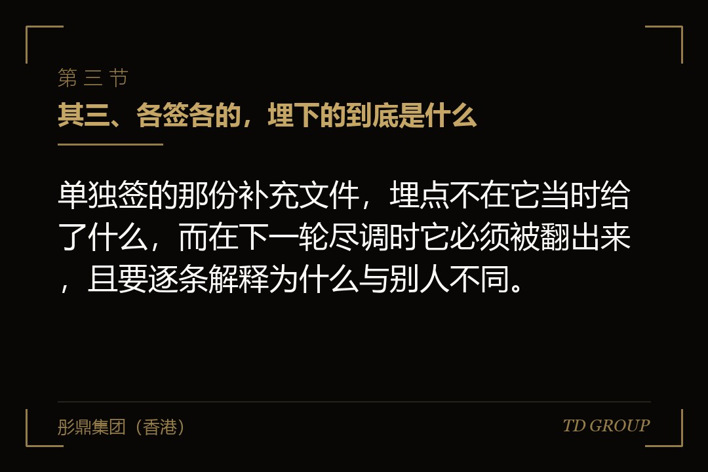

其一、领投人在这一轮里实际做的是哪几件事

结论先行：领投人做的是定价、出条款清单、牵头尽调这三件事，跟投方多数只出钱，于是谈判对象只有一个，签字对象却是全部。
先说定价。一轮融资里的价格是由领投方发现的：它做完尽调、给出估值判断、把这个价格写进条款清单，后面的人按同一个价格进来。跟投方之所以愿意跟，很大程度上是因为有人已经替它做过这道功课，而且把自己的钱押在了上面。
条款清单是这一轮的模板。清算优先怎么排、反稀释按什么方式算、董事会几个席位、哪些事项要投资方点头，这些都在领投方那份文件里定下来，后面所有人签的是同一套。所以企业方在条款上真正需要谈的对手，其实只有那一个。
领投方通常还要牵头尽调：律师、审计、行业访谈由它安排，费用常从本轮的交易费用里出。作为交换，它一般会要一个董事席位和部分事项的同意权——席位与否决事项另有专文，这里只需知道它们通常跟着领投一起来。
跟投方走的是另一套逻辑：不进董事会、不单独做尽调、也很少单独谈条款，它买的是领投方的判断。本质上这一轮里只有一个人在定价，其余的人在搭车。关键在于，定价的人只有一个，而签字的人是全部——这两件事从交割那天起就分开了。
其二、跟投方拿的是不是同一份条件

结论先行：跟投方进来有两种签法，签进同一份股东协议，或者各自另签一份文件，后一种会让这一轮的条件从一套变成好几套。
常规做法是一份主协议加一张加入函。跟投方签的那一页纸上写的是：本方接受主协议的全部条款，自签署之日起成为协议一方。这种签法不产生任何新条件，股权表上多一行，文件柜里多一页，其余什么都没变。
另一种是各签各的。跟投方说自己的投资决策委员会有硬性要求，主协议里没有，于是在主协议之外另签一份两三页的补充文件。签的时候通常不难，因为它要的东西看上去很小，而这一轮已经谈了很久，谁都不愿为这两页再拖半个月。
有家做工业机器视觉检测的公司就是这么办的。领投方那份股东协议前后谈了两个月，后面进来三家跟投，两家签的是加入函，还有一家坚持单独写一条回购安排，公司签了。股权表上看，四家投资人的条件是一样的；文件柜里，有一家手上多一条。
差别在于这份文件将来会不会被拿出来。只要公司还打算再融一轮、还打算上市，它一定会被拿出来——中介机构要的是公司与全体股东之间的所有书面安排，不是那张股权表。因此签之前该问的不是"这个要求过不过分"，而是"它跟主协议不一样的地方，将来怎么解释"。
其三、各签各的，埋下的到底是什么

结论先行：单独签的那份补充文件，埋点不在它当时给了什么，而在下一轮尽调时它必须被翻出来，且要逐条解释为什么与别人不同。
经济条款不一致是最直接的一层。清算优先的排序、回购的触发口径、反稀释的计算方式，只要有一家跟别人不同，退出那天就要按两套算，而算的时候各方都在场。这类不一致写在纸上不显眼，落到分钱那一刻寸步不让。
治理与信息权不一致是另一层。一家有月度报表权、其余是季度；一家的同意事项比别人多两条。日常经营时它体现为同一件事要征求两遍、材料要发两版；等到需要快速决策的时候，多出来的那两条就是那一家实际上的否决口。
更麻烦的是公司当时没把这份文件告诉领投方。领投方的协议里通常有一句"公司与其他投资人之间不存在本协议之外的书面安排"，这句话签下去就是一项陈述与保证。事后被翻出来，公司同时得罪两边，而领投方那一边的追索是写在纸上的。
判据其实很简单：这一轮结束的当天，公司要能一口气说清楚——与投资人之间的书面安排一共有几份、分别在谁手上、哪几条彼此不同。数不出来，就说明它已经乱了。上市前把各类特殊权利收上来统一处理另有专文，但拖到那时候再清理，价钱要贵得多。
其四、最惠国待遇条款：签的时候省事，下一轮最难拆
结论先行：最惠国待遇条款是跟投方要的一句兜底，将来公司给别人的条件比我好、我自动跟上，它签时不花钱，代价推到了下一轮。
它为什么会出现：小额跟投方没有谈判力，逐条去争条款既争不动也不值得，于是要一句总的。条文常写成"公司此后向任何投资人授予优于本协议的权利时，本投资人有权自动享有同等条件"。签的当下公司什么都不用给，所以很少有人为它多花时间。
发作在下一轮。新进来的投资人往往会要一些更硬的东西：清算优先的排序更靠前、反稀释的算法更严、同意事项多出两项。这些一给出去，当年那位跟投方按最惠条款自动跟上，而他并没有为这一轮多出一分钱。
有家做母婴营养品的公司在这里绕了很久。当年给一位出资不多的跟投方写了这一条，两年后的新一轮里投资方要了董事观察员席位与月度报表权，那位跟投方一并主张。公司要么照给，要么回头去谈一份弃权函，而对方并没有非签不可的理由。
更别扭的是新投资人通常也会要求，自己进来之后是条件最优的那一个。两条撞在一起，公司夹在中间，只能挨个去谈弃权。收窄的办法有三个：把范围限定在价格与清算这类经济条款、排除治理与信息条款；加一句同等条件须以同等出资为前提；给它一个时间窗，例如仅在下一轮之前有效。
其五、人一多，以后每一轮都要重做的四件事
结论先行：投资人从一个变成十个，涨上去的不是谈判成本，是此后每一轮的签字、通知、行权与数人头，这四件事每次都要重做一遍。
签字页是最直观的。一次增资要签的通常不止一份文件：增资协议、股东协议的修订件、股东会与董事会决议、放弃优先权的声明，每一份都要收齐每一位的签字页。八个人和二十个人的差别不在纸张，在时间——只要有一个人没签，交割就在那儿等着。
通知是第二件。优先增资权与优先购买权都要逐一通知到位，而且要能证明确实发到了。通知方式、送达认定、回复期限，这些条款在只有一两个投资人时没人细看，人一多它们就是这一轮能不能按期交割的开关。开头那家冷链公司卡的五周，卡的正是这一条。
行权与弃权是第三件。协议里有没有"逾期未回复视为放弃"这半句，是完全不同的两种局面：有，公司按期限往前走；没有，公司要一个一个去追回复，而那位当年出了几十万、后来换了邮箱换了地址的个人股东，往往就是最难找的那一个。
数人头是第四件，它出现得最晚、代价却最大。上市之前要按穿透口径把股东数清楚，代持要还原，契约型基金、资管计划这类没有工商登记主体的持股形式要往上追。有些市场对公众持股人数另有硬性要求，那是另一篇的事；这里的成本是清理本身——每往上追一层，就多出一批要签字的人。
所以这一轮真正该问的是那句话：签完之后，以后每做一件事要征求几个人同意。这个数字在交割那天就定下来了，往后想改，得靠一次又一次的股权转让去改，而每一次转让本身又要走一遍通知与优先权。
其六、归集：把小额的装进一个主体再进股权表
结论先行：把小额投资人装进一个持股主体、由代表人统一签字与行权，是控制股东人数的常规做法，而它越早做越便宜。
做法本身不复杂：新设一个有限合伙企业或一家公司作为持股主体，小额投资人成为这个主体的合伙人或股东，由普通合伙人或约定的代表人对外统一行使表决权、签署文件、接收通知。股权表上原本七八行，收成一行。
好处是把前面那四件事都收敛到一个对手方：通知发一份、签字收一张、优先权处理一次。上市前的穿透核查仍然要把里面的人还原出来，但结构清楚、名册在自己手上，跟散在外面挨个去找是两回事。
代价也要说清楚。多一层主体就多一份维护成本与税务安排；小额投资人要接受自己不再直接持有公司股权；代表人的授权范围必须写死——哪些事项他可以直接决定、哪些必须回去征求全体、他自己能不能转让在这个主体里的权益。这几句写不清楚，麻烦只是换了个地方待着。
时点决定价钱。融资的时候顺手做，成本只是设立一个主体；等他们已经进了股权表再往里挪，那是一次实打实的股权转让，要定价、要交税、还可能触发别人的优先购买权。开头那家冷链公司后来补做了这件事，花的钱比当初设立时高出不少。华尔街彤鼎俱乐部里聊到这一段，多数人的说法是一样的：当初嫌麻烦省下的那一次，后来都还回去了。
有一件事要明写：这跟员工持股平台不是一回事。两者常用同一种壳，所以经常被混着说，但员工那个平台解决的是激励——谁能进、按什么价进、离职怎么退、税怎么处理，整套机制都不一样，那是另一篇的事。这里说的这个主体只做一件事：把已经出了钱的外部投资人合并成一个签字人。
其七、领投方自己没到位：那句"实际出资不低于"是写给谁的
结论先行：跟投方是冲着领投方来的，所以领投方一旦缩水或退出，这一轮多半整轮塌掉，条款清单里要提前给这件事写好出口。
常见的塌法有两种。一种是领投方口头说的数和最后投委会批的数不一样；另一种是领投方内部审批没过，整个退出这一轮。这两种都不稀奇，尤其在市场不好的年份，而它们发生的时点通常已经很晚——尽调做完了，费用付掉了。
有家做职业教育培训的公司踩过这一段。这一轮计划的总额是八千万，领投方口头说包三千万，实际批下来一千五。跟投的两家看见领投缩了一半，直接不谈了。公司那时候律师费与审计费已经付掉，账上还是原来那个数，而市场上已经传开这一轮没谈成。
出口该写在条款清单里，写法有几种：把"领投方实际出资不低于某个数额"写成交割的先决条件，达不到则本轮条件重议；或者把本轮总额达到某个数写成先决条件；再或者约定领投方分期出资，后一期与经营节点挂钩——里程碑分期出资另有专文。
反过来那一面也要写：如果最终没能凑齐计划的总额，已经交割的那部分怎么办。是按实际出资调整持股比例，还是允许公司在一段时间内继续接受同等条件的投资人进来，或者给投资方留一个退出的口子。这几句不写，等钱到账之后再谈，谈的就是脸面而不是条款。
收口：签这一轮之前该定下来的六件事
结论先行：判断这一轮会不会给自己留下麻烦，不看估值谈到了多少，看下面这六件事在文件里分别是怎么写的，六条都答得上来才算读完。
其一，这一轮一共几个投资人、要签几份文件？领投方之外的人是签进主协议，还是另有安排。其二，如果确实有单独签的文件，公司留底了没有、领投方知道没有、它跟主协议哪几条不一样。
其三，有没有最惠国待遇条款？范围有没有限定在经济条款上，有没有加"同等条件须同等出资"的前提，有没有时间窗。其四，通知与弃权是怎么写的？有没有"逾期未回复视为放弃"，通知方式与送达认定写清楚了没有。
其五，小额投资人归不归集？归集主体的代表人授权到哪一步、谁来当这个代表人、他能不能转让自己在里面的权益。其六，领投方出资不到位怎么办？有没有写成交割的先决条件，凑不齐总额时已交割的部分怎么处理。
这六条的共同点是，它们在谈判桌上都不值钱——谈估值的时候没人为这些争，签字那天也看不出区别。它们发作的时点全在一年以后：下一轮的通知发不出去、一份弃权函谈了两个月、上市之前把股东往上追了三层。华尔街彤鼎俱乐部里有位做了多年制造业的企业主说过一句：他那一轮最贵的不是让出去的那点比例，是从此每做一件事都要问七个人。
以上为市场经验性表述，不构成法律意见。投资协议条款的效力、股东人数与穿透核查的具体口径、持股主体设立与权益转让涉及的登记与税务处理，应由具备相应资质的律师与税务师出具意见，以主管机关当时有效的规则与口径为准。彤鼎集团（香港）有限公司为企业管理咨询机构，持牌事项由具备相应资质的合作机构承做。